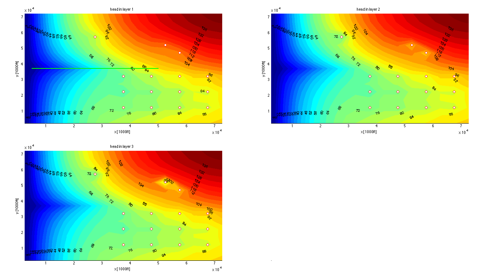

Ex1 -- Analyzing output of the model
Visualization of example EX1 of modflow 2000
TO 091011 091129
Contents
Load model name and the data generated and saved by mf_adapt
load('name.mat') % get basename stored in file name.mat load(basename); % having retrieved basename, load the data in [basename '.mat'] load underneath % load possible non-standard info from mf_adapt fsz=10; % set fontsize for plots
Read computed head data
H=readDat([basename,'.hds']); % read the file hrange = ContourRange(H,50); % determine suitable contour elevations
Reading MODFLOW binary output file <<ex1.hds>> verbose= 0
Scanning headers
finished, 3 records scanned
File contains the following:
Number of records in file : 3
Number of stress userPeriods: 1
Number of time steps : 1
Number of layers : 3
Number of rows : 15
Number of columns : 15
Maximum time in file " 100
Reading requested data ...
3 records read.
. 1 records in output struct.
Perpare plots
figure('name','example1','position',screenPos(1)); % new figure P=[0 0 0.4 0.4]; % size of subaxis % create axes at their desired position ax(1)=axes('position', [0.05 0.55 0 0]+P,'nextplot','add','fontsize',fsz); ax(2)=axes('position', [0.55 0.55 0 0]+P,'nextplot','add','fontsize',fsz); ax(3)=axes('position', [0.05 0.05 0 0]+P,'nextplot','add','fontsize',fsz); ax(4)=axes('position', [0.55 0.05 0 0]+P,'nextplot','add','fontsize',fsz,... 'xColor',grey,'yColor',grey,'color','k','ticklength',[0 0]); % for all layers make contour plot for iLay=1:gr.Nlay set(gca,'clim',hrange([1 end])); xlabel(ax(iLay),'x [1000ft]'); ylabel(ax(iLay),'y [1000ft]'); title( ax(iLay), sprintf('head in layer %d',iLay)) [c,hdl] = contourf(ax(iLay),gr.xm,gr.ym,H.values(:,:,iLay),hrange,'edgecolor','none'); % contour layer iLay clabel(c,hdl); % plot contour labels Iw=find([well.iLay]==iLay); well.plotXY(ax(iLay),'ro'); if iLay == 1, plot(ax(iLay),drn(:,1),drn(:,2),'color','g','linewidth',2); end end
Annotate plot with text
s={'Example from MODFLOW 2000 manual, p89';''; 'Computed in mfLab';''; 'TO 2012-04-07'};
text(0.5,0.5,s,'HorizontalAlignment','center','color','yellow','fontsize',fsz);
Use zonebudget to get budget overview
B=readBud([basename, '.bgt']); % read the Budget file Zonearray=gr.const(1:gr.Nlay); % first create a zone array (here onze zone per layer) zonebudget(B,Zonearray,1); % budget of layer 1 zonebudget(B,Zonearray,2); % same for layer 2 zonebudget(B,Zonearray,3); % same for layer 3 zonebudget(B,Zonearray,[1 2 3]); % for all 3 layers totaled
Trying to read ex1.bgt as BINARY file...it works!
Scanning 7 headers
finished, 7 records scanned
File contains the following:
Number of records in file: 7
Number of stress periods : 1
Number of time steps : 1
Number of layers : 3
Number of Rows : 15
Number of columns : 15
Number of unique labels : 7
CONSTANTHEAD
DRAINS
FLOWFRONTFACE
FLOWLOWERFACE
FLOWRIGHTFACE
RECHARGE
WELLS
Reading the requested data ...
Please wait while I'm getting the requested data ...
....... 1 records in output struct.
============================================
zoneBudget will be computed for zones: 1
Budget [consistent model units] for period=1, itsp=1:
BUDGET FOR ZONE 1 -----IN----- ----OUT-----
total for CONSTANTHEAD = 0.00 54.65
total for FLOWRIGHTFACE = 0.00 -0.00
total for FLOWFRONTFACE = 0.00 -0.00
total for FLOWLOWERFACE = 0.93 16.95
total for WELLS = 0.00 60.00
total for DRAINS = 0.00 26.84
total for RECHARGE = 157.50 -0.00
------------ ------------
total for ZONE 1 = 158.43 158.44
total net ZONE 1 = -0.00
============================================
zoneBudget will be computed for zones: 2
Budget [consistent model units] for period=1, itsp=1:
BUDGET FOR ZONE 2 -----IN----- ----OUT-----
total for CONSTANTHEAD = 0.00 1.01
total for FLOWRIGHTFACE = 0.00 -0.00
total for FLOWFRONTFACE = 0.00 -0.00
total for FLOWLOWERFACE = 18.44 7.43
total for WELLS = 0.00 10.00
total for DRAINS = 0.00 -0.00
total for RECHARGE = 0.00 -0.00
------------ ------------
total for ZONE 2 = 18.44 18.44
total net ZONE 2 = 0.00
============================================
zoneBudget will be computed for zones: 3
Budget [consistent model units] for period=1, itsp=1:
BUDGET FOR ZONE 3 -----IN----- ----OUT-----
total for CONSTANTHEAD = 0.00 -0.00
total for FLOWRIGHTFACE = 0.00 -0.00
total for FLOWFRONTFACE = 0.00 -0.00
total for FLOWLOWERFACE = 6.50 1.50
total for WELLS = 0.00 5.00
total for DRAINS = 0.00 -0.00
total for RECHARGE = 0.00 -0.00
------------ ------------
total for ZONE 3 = 6.50 6.50
total net ZONE 3 = 0.00
============================================
zoneBudget will be computed for zones: 1 2 3
Budget [consistent model units] for period=1, itsp=1:
BUDGET FOR ZONE 1 2 3 -----IN----- ----OUT-----
total for CONSTANTHEAD = 0.00 55.66
total for FLOWRIGHTFACE = 0.00 -0.00
total for FLOWFRONTFACE = 0.00 -0.00
total for FLOWLOWERFACE = 0.00 -0.00
total for WELLS = 0.00 75.00
total for DRAINS = 0.00 26.84
total for RECHARGE = 157.50 -0.00
------------ ------------
total for ZONE 1 2 3 = 157.50 157.50
total net ZONE 1 2 3 = -0.00